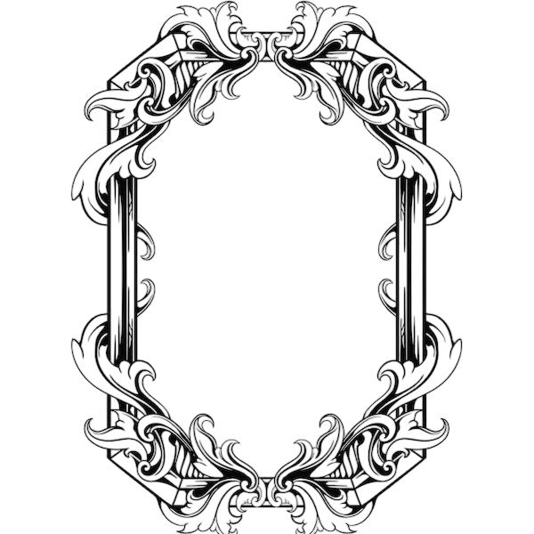
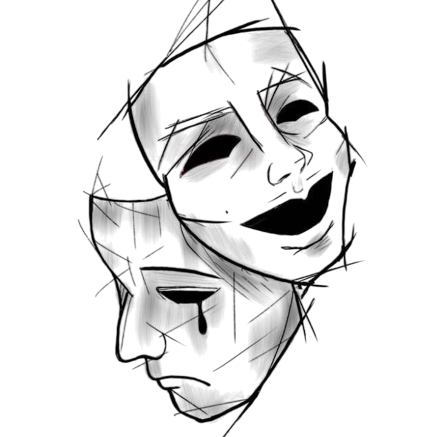
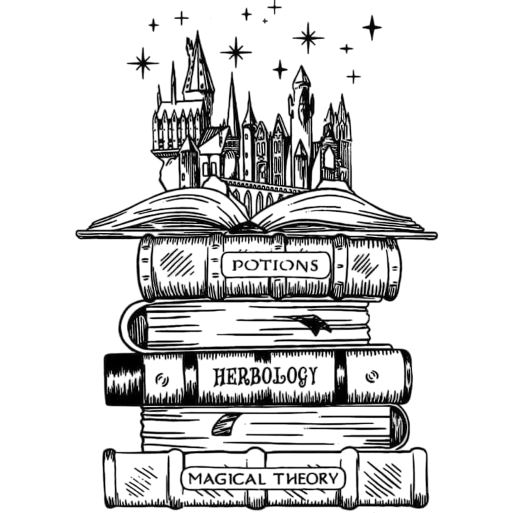
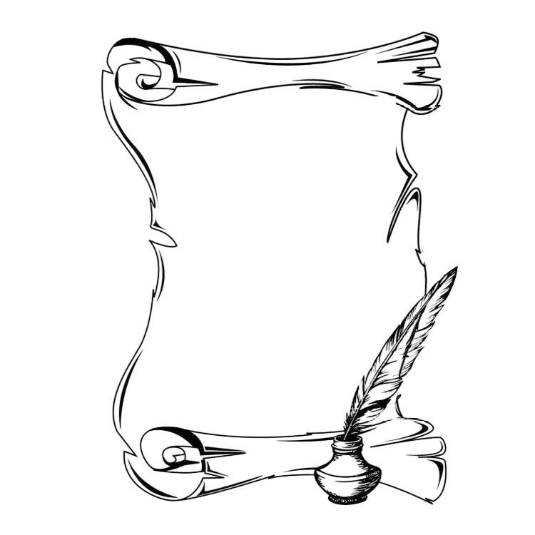

Nom : Rivers.
Prénom : Inaya.
Origines : Britaniques.
Sang : Sang-pur.
Age : 11 Ans.
Date de Naissance : 1882.
Maison souhaitée : Serpentard.

Bois de Baguette : .
Coeur de Baguette : .
Taille de Baguette : .
Rigidité de Baguette : .

Apparence Physique :
À onze ans, Inaya Rivers est une jeune fille à l'apparence soignée et élégante, dont les traits rappellent principalement ceux de sa mère, Hazel.
Elle possède une peau très claire, presque porcelainée, parsemée de quelques discrètes taches de rousseur sur le nez et le haut des joues. Son visage présente des traits fins, un nez délicat, des sourcils légèrement arqués et une mâchoire douce, mais déjà bien dessinée.
Ses cheveux sont longs, épais et naturellement ondulés, d'un brun très foncé tirant vers le noir, légèrement plus clairs que les cheveux noir charbon de sa petite sœur. Ils descendent au-delà de ses épaules et encadrent naturellement son visage.
Mais son trait le plus remarquable demeure sans aucun doute ses yeux.
D'un gris particulièrement clair et profond, ils possèdent une intensité singulière, parfois accentuée par de légers reflets bleutés selon la lumière. Son regard peut sembler perçant, voire intimidant, notamment lorsqu'elle observe quelqu'un avec insistance.
Inaya possède une silhouette fine, mesure environ 1,58 m et adopte généralement une posture droite, héritée de l'éducation rigoureuse reçue auprès de sa famille.
Elle apprécie les vêtements élégants, mais sans extravagance. Ses préférences vont principalement aux robes simples, aux chemisiers soignés et aux couleurs sombres, notamment le noir, le gris, le bleu nuit et le vert profond.
Bien qu'elle ressemble davantage à Hazel, certains détails de ses expressions rappellent également Dean.

Personnalité :
Inaya Rivers est une jeune fille à la personnalité complexe, mêlant intelligence, ambition, indépendance et une certaine difficulté à exprimer ouvertement ses sentiments.
Curieuse et particulièrement observatrice, elle possède un goût prononcé pour la connaissance. Elle apprécie la lecture, les recherches personnelles et les sujets nécessitant réflexion et raisonnement. Lorsqu'une question l'intéresse, elle peut consacrer des heures à chercher une réponse, refusant généralement de se satisfaire d'explications approximatives.
Cette curiosité s'accompagne d'une ambition déjà bien présente malgré son jeune âge. Inaya souhaite réussir grâce à ses propres capacités et supporte difficilement l'échec. Elle peut recommencer plusieurs fois une activité jusqu'à obtenir un résultat qu'elle juge satisfaisant.
Cependant, cette détermination possède également ses mauvais côtés.
Orgueilleuse, obstinée et parfois provocatrice, Inaya n'apprécie guère qu'on la sous-estime ou qu'on lui impose des règles sans justification. Lorsqu'elle estime avoir raison, elle peut défendre son opinion avec une insistance particulièrement agaçante pour son entourage.
Elle possède également un humour volontiers sarcastique et une répartie parfois mordante. Si elle se sent provoquée, ses remarques peuvent devenir piquantes, voire légèrement méchantes, sans qu'elle mesure toujours leur portée.
Malgré son apparente assurance, Inaya n'accorde pas facilement sa confiance. Face aux inconnus, elle se montre généralement réservée, prudente et peu expressive. Elle préfère observer avant de se dévoiler, ce qui peut parfois lui donner une réputation de jeune fille froide ou hautaine.
Cette impression ne reflète pourtant qu'une partie de sa personnalité.
Lorsqu'elle se trouve en compagnie de personnes qu'elle apprécie, Inaya révèle un tempérament beaucoup plus espiègle et joueur. Elle aime plaisanter, taquiner ses proches et participer occasionnellement à quelques bêtises, à condition de ne pas en subir les conséquences.
Elle possède également un sens profond de la loyauté. Bien qu'elle exprime rarement son affection par de grandes déclarations, elle se montre attentive et protectrice envers les personnes auxquelles elle tient, particulièrement sa petite sœur Izy.
Sa fierté représente néanmoins l'un de ses principaux défauts. Reconnaître ses erreurs lui demande parfois un effort considérable, et elle préfère généralement prendre du recul avant de présenter des excuses discrètes.
Inaya n'est donc ni une enfant parfaite ni une jeune fille foncièrement cruelle. Derrière son caractère parfois difficile se cache une enfant sensible, encore en train d'apprendre à comprendre ses émotions et à trouver sa place.
Elle possède les qualités nécessaires pour accomplir de grandes choses, mais devra apprendre à ne pas laisser son orgueil et son ambition prendre le dessus sur son jugement.
Ses principales qualités : intelligence, curiosité, ambition, loyauté, sens de l'observation, détermination et indépendance.
Ses principaux défauts : orgueil, obstination, sarcasme, méfiance, impatience et difficulté à reconnaître ses erreurs ou à exprimer ses sentiments.

Compétences :
A REMPLIR

Objectifs :
A REMPLIR
I. Une enfant née de deux anciennes lignées

En 1882, au sein de la demeure familiale des Rivers, naquit une petite fille prénommée Inaya.
Elle était le premier enfant de Dean Rivers, magizoologiste au ministère de la Magie, et de Hazel Rivers, née Blackhorne, médicomage issue d'une ancienne famille de sorciers britanniques.
Sa naissance représentait bien davantage que l'arrivée d'un nouvel enfant. Elle réunissait deux héritages familiaux particulièrement anciens.
Du côté paternel, les Rivers étaient réputés pour leur intérêt envers les créatures magiques, leur attachement aux connaissances et leur respect du monde vivant. Leur blason, orné d'un serpent turquoise et de deux corbeaux, rappelait leur devise : Per Aquam Mentem.
Du côté maternel, les Blackhorne étaient connus pour leurs connaissances médicinales, leurs enchantements protecteurs et leur attachement à la préservation du savoir. Leur emblème représentait un corbeau noir, accompagné d'une lune et de fleurs blanches.
Inaya grandit donc dans un environnement où les traditions occupaient une place importante. Les bibliothèques familiales renfermaient des manuscrits anciens, des traités de médecine magique et des ouvrages consacrés aux créatures fantastiques.
Pourtant, Dean et Hazel ne souhaitaient pas élever leur fille dans l'idée que son ascendance lui conférait une quelconque supériorité.
Tous deux considéraient que l'appartenance à une ancienne lignée impliquait avant tout des responsabilités.
Ils espéraient transmettre à leurs enfants le respect du savoir, l'importance du jugement personnel et la conviction que la valeur d'un sorcier ne dépendait pas de la pureté de son sang.
Dès les premières années de sa vie, Inaya fut ainsi entourée de connaissances, de traditions et d'attentes familiales qu'elle apprendrait progressivement à comprendre.
II. Une enfance entre livres et curiosité
La demeure familiale des Rivers possédait une importante collection d'ouvrages consacrés à la magie, aux créatures fantastiques, à l'histoire des sorciers et aux recherches de leurs ancêtres.
Pour Inaya, ces bibliothèques représentaient un univers fascinant.
Dès qu'elle fut suffisamment grande pour parcourir seule les différentes pièces de la maison, elle prit l'habitude de s'attarder devant les rayonnages, examinant les couvertures des livres et interrogeant les adultes sur les titres qu'elle ne comprenait pas encore.
Dean prenait généralement plaisir à répondre à ses questions.
Il lui arrivait de lui montrer certains ouvrages de magizoologie, notamment ceux contenant des illustrations de créatures magiques.
Un jour, alors qu'ils parcouraient ensemble un livre consacré aux espèces les plus méconnues, Inaya interrompit son père.
— Papa, pourquoi certaines créatures magiques sont-elles considérées comme dangereuses ?
Dean lui expliqua que certaines espèces possédaient des capacités susceptibles de blesser gravement un sorcier, même sans intention malveillante.
— Alors ce n'est pas forcément parce qu'elles sont méchantes ?
— Exactement.
Inaya réfléchit quelques instants avant de poursuivre :
— Dans ce cas, pourquoi les gens disent-ils qu'elles le sont ?
Dean sourit.
Il lui expliqua que les sorciers avaient parfois tendance à craindre ce qu'ils ne comprenaient pas et que certaines réputations reposaient davantage sur des histoires que sur des observations sérieuses.
Ces conversations occupaient une place importante dans leur quotidien.
Hazel, de son côté, lui faisait découvrir un autre domaine du monde magique.
Il arrivait qu'Inaya observe sa mère préparer certains remèdes ou organiser ses ingrédients médicinaux. Elle lui demandait alors à quoi servaient les différentes plantes et pourquoi certaines préparations nécessitaient autant de précautions.
Hazel répondait volontiers à ses interrogations, mais veillait à ce que sa fille ne manipule jamais de substances dangereuses.
Inaya découvrit ainsi que toutes les connaissances ne pouvaient pas être mises en pratique immédiatement.
Une leçon qu'elle n'appréciait pas toujours, mais qu'elle finirait par comprendre.
III. L'arrivée d'Izy
En 1883, lorsque Inaya avait environ un an, la famille Rivers accueillit un second enfant : Izy Rivers.
L'arrivée de cette petite sœur bouleversa progressivement les habitudes de la maison.
Durant les premières années, Inaya ne comprenait pas toujours pourquoi ce bébé réclamait autant d'attention. Elle observait parfois Izy avec perplexité, notamment lorsqu'elle se mettait à pleurer sans raison apparente.
Mais en grandissant, les deux filles commencèrent à partager davantage de moments ensemble.
Izy était une enfant particulièrement joyeuse, expressive et espiègle. Elle aimait inventer des jeux, poser des questions et entraîner sa sœur dans de petites aventures.
Leurs différences donnaient régulièrement lieu à quelques chamailleries.
— Izy, tu pourrais essayer de rester tranquille cinq minutes ?
— Pourquoi ?
— Parce que certaines personnes aiment le silence.
— Mais toi, tu m'aimes quand même !
Inaya levait généralement les yeux au ciel, sans parvenir à trouver une réponse satisfaisante.
Malgré leurs disputes occasionnelles, les deux sœurs développèrent une véritable complicité.
Izy avait le don de perturber les activités de son aînée, notamment lorsqu'elle venait lui poser des questions alors qu'elle était occupée à lire.
Il arrivait également qu'elle entraîne Inaya dans quelques bêtises.
Cette dernière prétendait souvent n'y participer que pour empêcher sa cadette de faire quelque chose de stupide.
Pourtant, il n'était pas rare qu'elle finisse par s'amuser autant qu'elle.
Leur relation n'était cependant pas toujours paisible.
Inaya pouvait se montrer autoritaire, tandis qu'Izy supportait difficilement qu'on lui dicte sa conduite.
Mais lorsqu'une personne extérieure s'en prenait injustement à sa petite sœur, leurs désaccords étaient rapidement oubliés.
Au fil des années, elles apprirent ainsi à construire une relation faite de plaisanteries, de disputes enfantines et d'une affection sincère.
IV. La première manifestation magique
1887 — Inaya, cinq ans.
La première manifestation magique d'Inaya se produisit dans la bibliothèque familiale.
Ce jour-là, la petite fille s'était installée près d'une étagère contenant plusieurs ouvrages illustrés.
Depuis quelque temps, elle avait remarqué un petit livre à la couverture sombre, décoré de motifs argentés.
L'ouvrage contenait des illustrations de créatures magiques.
Malheureusement, il se trouvait sur une étagère beaucoup trop haute pour elle.
Inaya tenta d'abord de l'atteindre en se dressant sur la pointe des pieds.
Sans succès.
Elle chercha ensuite un petit tabouret, mais celui-ci ne lui permit toujours pas d'atteindre le livre.
Elle resta quelques instants immobile, les bras croisés, fixant l'objet avec contrariété.
— C'est ridicule…
Elle tendit une dernière fois la main.
— Je veux juste ce livre !
À cet instant, plusieurs ouvrages disposés sur l'étagère frémirent légèrement.
Inaya se figea.
Le petit livre qu'elle désirait glissa lentement vers le bord.
Il bascula, puis descendit d'une manière étrange, comme si sa chute avait été brièvement ralentie.
Il termina sa course sur le tapis, juste devant ses pieds.
La fillette demeura silencieuse.
Elle regarda l'étagère, puis le livre.
Après quelques secondes, elle se baissa pour le ramasser.
Son expression contrariée avait complètement disparu.
À sa place se dessinait une curiosité presque émerveillée.
— Comment tu as fait ça ? murmura-t-elle en observant la couverture.
Elle ouvrit immédiatement l'ouvrage, comme si la réponse pouvait se trouver à l'intérieur.
Quelques instants plus tard, Dean entra dans la bibliothèque.
Il remarqua le tabouret déplacé, les livres légèrement désordonnés et sa fille assise sur le tapis.
— Inaya ? Qu'est-ce qui s'est passé ici ?
Elle leva les yeux vers lui.
— Le livre est descendu tout seul.
Dean observa l'étagère.
— Tout seul ?
— Oui. Je voulais l'attraper, mais il était trop haut. Et après… il est tombé, mais pas vraiment comme un livre normal.
Dean comprit rapidement ce qui venait de se produire.
Il s'accroupit près de sa fille.
— Je crois que tu viens de faire de la magie.
Inaya le regarda avec une expression incrédule.
— Moi ?
— Oui, toi.
Elle baissa les yeux vers ses mains.
— Mais je n'ai même pas de baguette.
Dean sourit.
— La magie ne commence pas avec une baguette, Inaya. Elle fait déjà partie de toi.
La fillette resta silencieuse quelques secondes.
Puis elle posa une question qui fit rire son père.
— Alors pourquoi je ne peux pas faire descendre tous les livres quand je veux ?
Dean lui expliqua que les jeunes sorciers pouvaient parfois manifester leur magie involontairement, particulièrement lorsqu'ils ressentaient une émotion intense.
Cela ne signifiait pas qu'ils étaient capables de contrôler leurs pouvoirs.
Lorsque Hazel apprit l'incident, elle fut naturellement heureuse de découvrir que sa fille avait manifesté ses premières capacités magiques.
Elle rappela néanmoins à Inaya qu'elle ne devait pas essayer de reproduire l'expérience en prenant des risques.
La petite fille acquiesça.
Mais pendant plusieurs jours, elle observa les livres de la bibliothèque avec un intérêt renouvelé.
Cette première manifestation n'avait rien d'extraordinaire pour une enfant sorcière.
Elle marqua pourtant profondément Inaya.
Pour la première fois, elle venait de comprendre que la magie ne se trouvait pas uniquement dans les livres qu'elle lisait.
Elle existait également en elle.
V. Les années précédant Poudlard
Entre ses six et ses dix ans, Inaya poursuivit son éducation au sein de la demeure familiale.
Ses journées étaient partagées entre les apprentissages, les lectures, les activités organisées par ses parents et les moments passés avec Izy.
Hazel accordait une grande importance à la discipline et au travail bien fait.
Elle encourageait sa fille à terminer ce qu'elle entreprenait, à respecter ses engagements et à réfléchir avant d'agir.
Cependant, cette éducation ne se déroulait pas toujours sans difficultés.
Inaya avait parfois tendance à discuter les décisions de sa mère, particulièrement lorsqu'elle ne comprenait pas les raisons d'une interdiction.
Hazel devait alors lui rappeler qu'une explication n'était pas nécessairement une invitation à négocier.
Ces désaccords pouvaient durer un certain temps, aucune des deux ne souhaitant facilement céder.
Dean intervenait parfois pour apaiser la situation.
Il préférait généralement discuter avec sa fille et tenter de comprendre ce qui avait provoqué son mécontentement.
Cette approche ne fonctionnait pas systématiquement.
Il arrivait qu'Inaya utilise la patience de son père pour essayer d'obtenir une permission que Hazel lui avait déjà refusée.
Une stratégie qui ne trompait pas longtemps ses parents.
Malgré ces petits conflits, Inaya profitait d'une enfance relativement heureuse.
Elle avait accès à de nombreux ouvrages, recevait une éducation attentive et pouvait compter sur la présence de sa famille.
Les moments passés avec Izy occupaient également une place importante.
Les deux sœurs inventaient parfois des jeux dans les jardins ou exploraient les différentes pièces de la demeure.
Il arrivait qu'elles commettent quelques bêtises, notamment lorsqu'une idée particulièrement amusante leur venait à l'esprit.
Dean se montrait souvent indulgent face à ces incidents, tandis que Hazel veillait à ce que leurs filles comprennent les conséquences de leurs actes.
Ces années permirent à Inaya de découvrir progressivement les limites de son indépendance.
Elle apprit notamment que l'on pouvait être convaincu d'avoir raison et devoir malgré tout accepter une décision contraire à ses souhaits.
Une leçon qu'elle était encore loin de maîtriser parfaitement.
VI. Les enseignements de Dean et Hazel
L'éducation d'Inaya fut profondément marquée par les domaines de prédilection de ses parents.
Hazel lui transmit ses premières connaissances en botanique et lui fit découvrir certains principes fondamentaux de la médecine magique.
Il ne s'agissait pas encore de véritables cours de médicomagie, mais plutôt d'explications adaptées à son âge.
Inaya apprit ainsi à reconnaître quelques plantes, à comprendre l'utilité de certaines préparations et à respecter les précautions nécessaires lorsqu'on manipulait des ingrédients magiques.
Dean lui fit découvrir un univers différent.
Grâce à ses recherches et à ses missions au ministère, il possédait de nombreux carnets d'observation consacrés aux créatures magiques.
Il lui arrivait de partager certaines découvertes avec ses filles, leur montrant des illustrations ou leur racontant les circonstances de ses observations.
Inaya appréciait particulièrement les récits concernant les espèces méconnues.
Cependant, elle ne partageait pas toujours l'enthousiasme de son père pour les longues excursions.
Il lui arrivait de préférer l'étude d'un ouvrage à plusieurs heures passées dans la nature à attendre l'apparition d'une créature.
Dean ne s'en offusquait pas.
Il considérait que chacun devait découvrir ses propres passions.
Au-delà de leurs enseignements respectifs, Dean et Hazel tenaient à transmettre à leurs filles certaines valeurs communes.
Ils leur apprirent notamment à respecter les autres sorciers, indépendamment de leur ascendance.
Inaya connaissait parfaitement l'ancienneté des familles Rivers et Blackhorne.
Elle savait que leurs noms étaient associés à plusieurs générations de recherches et de traditions.
Mais ses parents lui rappelaient régulièrement qu'un héritage prestigieux ne suffisait pas à faire de quelqu'un une personne respectable.
À leurs yeux, les actes comptaient davantage que les origines.
Cet enseignement accompagnerait Inaya lorsqu'elle quitterait finalement la demeure familiale.
VII. La lettre de Poudlard
À l'approche de ses onze ans, Inaya attendait avec impatience le moment où elle pourrait enfin rejoindre Poudlard.
Depuis son enfance, elle avait entendu de nombreuses histoires concernant le château.
Dean lui avait parlé de la tour de Serdaigle, des salles de classe et de ses souvenirs d'étudiant.
Hazel lui avait raconté les longues soirées consacrées aux devoirs, les exigences de certains professeurs et les nombreuses connaissances qu'elle avait acquises durant sa scolarité.
Inaya avait également découvert plusieurs descriptions de l'école dans les ouvrages familiaux.
Mais aucune lecture ne pouvait véritablement remplacer l'expérience de s'y rendre elle-même.
Lorsque sa lettre d'admission arriva enfin, elle la relut plusieurs fois.
Malgré ses efforts pour conserver son calme, elle ne parvenait pas à dissimuler complètement sa satisfaction.
Izy, évidemment, voulut connaître chaque détail.
— Tu vas vraiment aller à Poudlard ?
— C'est ce qui est écrit.
— Et tu vas apprendre des sorts ?
— Normalement, oui.
— Et tu pourras m'en montrer ?
Inaya leva les yeux vers elle.
— Tu sais très bien que je n'ai pas le droit de faire de la magie à la maison.
Izy soupira.
— C'est vraiment dommage.
La perspective du départ suscita rapidement de nombreuses conversations dans la famille.
Hazel commença à organiser les préparatifs nécessaires, veillant à ce que rien ne manque à sa fille.
Dean, quant à lui, profita de l'occasion pour lui raconter quelques anecdotes supplémentaires sur ses années d'études.
Inaya l'écoutait avec intérêt, tout en imaginant ce qu'elle pourrait découvrir une fois sur place.
Pour la première fois, elle allait quitter durablement le cadre familial.
Elle devrait apprendre à vivre parmi d'autres élèves, suivre les enseignements de ses professeurs et prendre certaines décisions sans pouvoir consulter immédiatement ses parents.
Cette perspective l'enthousiasmait autant qu'elle l'impressionnait.
VIII. Le départ pour Poudlard
Le jour du départ arriva en septembre 1893.
À la gare de King's Cross, Inaya se tenait près de ses parents et de sa petite sœur.
Autour d'eux, de nombreuses familles accompagnaient leurs enfants vers le Poudlard Express.
Certains élèves semblaient déjà habitués à ce voyage, tandis que d'autres découvraient les lieux pour la première fois.
Hazel vérifia une dernière fois qu'Inaya possédait toutes ses affaires.
— Tes livres ?
— Oui, maman.
— Tes affaires de cours ?
— Oui.
— Et ta baguette ?
Inaya soupira doucement.
— Maman, tu me l'as déjà demandé.
Hazel lui adressa un regard qui suffit à interrompre toute remarque supplémentaire.
Dean, légèrement amusé, posa une main sur l'épaule de sa fille.
— Profite de cette année, Inaya. Apprends autant que tu peux, mais n'oublie pas de vivre un peu aussi.
Elle hocha la tête.
Izy, quant à elle, semblait beaucoup moins enthousiaste à l'idée de voir sa sœur partir.
— Tu vas m'écrire ?
— Évidemment.
— Souvent ?
— Si tu arrêtes de poser des questions pendant cinq minutes.
Izy lui tira la langue.
Inaya esquissa un sourire.
Puis, après quelques derniers échanges, elle monta dans le Poudlard Express.
Lorsqu'elle trouva une place près d'une fenêtre, elle observa une dernière fois sa famille sur le quai.
Elle ne fit pas de grands gestes.
Mais elle leva légèrement la main.
Et lorsque le train commença à avancer, elle sentit quelque chose changer.
Elle n'était plus seulement la fille de Dean et Hazel Rivers.
Elle allait désormais devoir apprendre à devenir Inaya Rivers par elle-même.
Retour